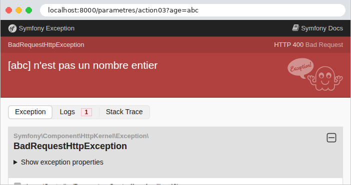
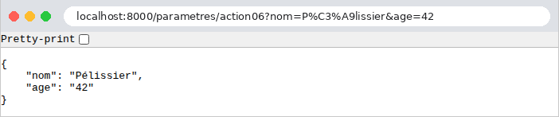
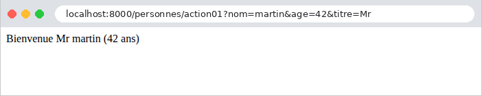
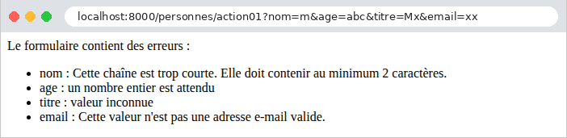

3. Le modèle d'une action
Une action a besoin des informations envoyées par le navigateur : les paramètres de l'URL ([?nom=martin&age=42]), les champs d'un formulaire, le corps JSON d'une requête, parfois un entête HTTP. Le cours d'origine appelle modèle de l'action l'ensemble de ces informations. Ce chapitre montre comment une action [Symfony] les obtient, les convertit dans le bon type et les valide. Ce travail s'appelle la liaison de données (data binding).
[Symfony] donne accès aux informations de la requête par l'objet [Request] (exemple 05), sous forme de chaînes de caractères, avec quelques méthodes de conversion. Il sait aussi lier ces informations aux paramètres d'une action, grâce à des attributs ([#[MapQueryParameter]], [#[MapQueryString]], [#[MapRequestPayload]]), et les valider, grâce à son composant Validator : on décrit les données attendues par des contraintes (« obligatoire », « un entier entre 0 et 150 »...), écrites comme des attributs [PHP], et le validateur vérifie que les données les respectent. Nous lirons d'abord les paramètres à la main (exemple 07), puis nous confierons leur conversion et leur vérification au framework (exemples 08 à 12). Au chapitre suivant, les mêmes contraintes valideront les formulaires HTML.
Attention au vocabulaire : le mot « modèle » désignera surtout, au chapitre suivant, les données qu'une action transmet à sa vue. Le modèle d'une action, au sens de ce chapitre, est ce qu'elle reçoit.
Les exemples 07 à 12 se lancent comme ceux du chapitre précédent : un terminal ouvert sur le dossier de l'exemple, [php -S localhost:8000 -t public] ; [Ctrl-C] arrête le serveur. La plupart ont l'écouteur [JsonLisible] de l'exemple 03, pour un JSON lisible. Nous ne commenterons leurs fichiers de configuration que lorsqu'ils apportent quelque chose de nouveau.
3.1. Exemple 07 : les paramètres de l'URL
Les paramètres de l'URL sont la partie qui suit le [?] : [?nom=martin&age=42]. Cette partie s'appelle la chaîne de requête (query string). Chaque paramètre est un couple [nom=valeur] ; les couples sont séparés par des [&]. Le contrôleur [ParametresController] :
- ligne 22 : la propriété [query] de la requête contient les paramètres de l'URL, dans un « sac » de paramètres (un objet [InputBag]), dont la méthode [get] rend la valeur d'un paramètre, déjà décodée, ou [null] s'il est absent ;
- ligne 23 : l'action affiche la valeur, et son type : la fonction [get_debug_type] rend le nom du type d'une valeur. Une valeur tirée de l'URL est toujours une chaîne ([string]). L'opérateur [.] concatène la chaîne interpolée et le type ;
- ligne 32 : la méthode [getInt] lit le paramètre et le convertit en entier. Un paramètre absent donne 0 ; une valeur qui n'est pas un entier ([abc]) provoque une erreur 400 (Bad Request, la requête est incorrecte). Il existe de même [getBoolean] ([1], [true], [on], [yes] sont vrais), [getString], [getAlpha] (les lettres seulement), [getDigits] (les chiffres seulement), [getEnum] (une énumération) ;
- lignes 41-51 : un paramètre obligatoire, et une conversion faite à la main, qui distingue les deux erreurs possibles. [throw new BadRequestHttpException(message)] arrête l'action par une réponse 400, accompagnée du message (cf. exemple 03, qui levait de même une exception 404). La fonction [filter_var] de [PHP], avec le filtre [FILTER_VALIDATE_INT], rend l'entier contenu dans la chaîne, ou [false] si la chaîne n'est pas un entier ;
- ligne 58 : le second paramètre de [getInt] est une valeur par défaut, utilisée si le paramètre manque. C'est le cas typique du numéro de page d'une liste ;
- ligne 67 : rien n'oblige à nommer la variable [PHP] comme le paramètre de l'URL. Les moteurs de recherche utilisent souvent un paramètre court, [q] (query) ;
- ligne 75 : [all()] rend tous les paramètres de l'URL, dans un tableau associatif, que l'action convertit en JSON (cf. exemple 03) ;
- lignes 81-85 : la façon déclarative. L'attribut [#[MapQueryParameter]], placé devant un paramètre de l'action, lie ce paramètre au paramètre de l'URL de même nom, et le convertit dans le type déclaré ([int]). Un paramètre sans valeur par défaut est obligatoire : absent, ou impossible à convertir, il provoque une erreur 404 (l'URL, telle qu'elle est écrite, ne désigne aucune page valide). Une valeur par défaut ([$page = 1]) le rend facultatif. C'est le travail des lignes 41-51, en une ligne.
Testons chaque action avec [curl]. Un paramètre présent, puis absent :
Les guillemets autour de l'URL sont nécessaires dans un terminal : sans eux, le shell interpréterait le [&] (qui lance une commande en arrière-plan sous [Linux]) et le [?]. La valeur [null], insérée dans une chaîne, devient une chaîne vide. Une valeur contenant des espaces ou des caractères spéciaux doit être encodée dans l'URL : l'espace devient [%20], le [&] devient [%26] (sinon, il séparerait deux paramètres). Le navigateur le fait tout seul ; avec [curl], il faut l'écrire. [PHP] décode la valeur avant que l'action ne la lise :
La conversion par [getInt], réussie, ratée, puis sans paramètre :
[Symfony] refuse de convertir [abc] en entier : c'est une erreur du client, d'où le code 400 (« Input value "age" cannot be converted to "int" »). En revanche, un paramètre absent donne silencieusement 0 : l'action ne peut pas distinguer ce cas d'un âge de 0 saisi pour de bon. Le paramètre obligatoire de l'action 03, absent puis invalide. Nous demandons une réponse JSON (entête [Accept], cf. exemple 03), qui contient le message de l'exception :
(le caractère [è] est écrit [\u00e8] dans ce JSON compact, cf. exemple 03). Dans un navigateur, en mode debug, une réponse 400 affiche la page d'erreur de [Symfony], avec le message :

La valeur par défaut, et le paramètre renommé :
Tous les paramètres d'un coup. Le paramètre [nom] apparaît deux fois :
Le paramètre [nom] ne garde que sa dernière valeur : c'est une règle de [PHP], que nous retrouverons à l'exemple 10. L'âge est resté une chaîne (["42"], entre guillemets dans le JSON) : aucune conversion n'a été demandée. Dans un navigateur (ici [Chromium]), le JSON est présenté tel que le serveur l'a mis en forme ; la case « Pretty-print » le présenterait indenté s'il ne l'était pas. La barre d'adresse montre au passage l'encodage des caractères accentués dans l'URL ([é] devient [%C3%A9], ses deux octets en [UTF-8]) :

Enfin, la liaison par [#[MapQueryParameter]], avec et sans le paramètre facultatif, puis avec un âge invalide :
Sans le paramètre [age], le message serait « Missing query parameter "age" ». Le code 404 surprend peut-être : l'attribut accepte un paramètre [validationFailedStatusCode], qui permet d'en choisir un autre ([#[MapQueryParameter(validationFailedStatusCode: 400)]]).
Ce premier exemple montre les limites de l'approche manuelle : pour chaque paramètre, il faut écrire la lecture, la conversion, le traitement de l'absence et de l'erreur. Avec dix paramètres, le code de l'action serait noyé sous ces vérifications. [#[MapQueryParameter]] allège la conversion, mais ne dit rien des règles (« une chaîne de 2 à 20 caractères »). Il vaut mieux décrire ce qu'on attend, et laisser le framework le vérifier. C'est l'objet de l'exemple suivant.
3.2. Exemple 08 : un modèle d'action décrit par une classe
Le modèle d'une action peut être décrit par une classe : une propriété par paramètre attendu, avec son type, et, sous forme d'attributs, les contraintes qu'il doit respecter. [Symfony] fabrique alors lui-même l'objet à partir de la requête, le valide, et le passe à l'action. Les contraintes sont les classes du composant Validator : [NotBlank] (obligatoire), [Length] (une longueur), [Range] (un intervalle), [Choice] (une liste de valeurs), [Email], [Regex]... [Symfony] en fournit plus de soixante-dix.
3.2.1. Le modèle : src/Modele/PersonneModele.php
- ligne 7 : l'importation de l'espace de noms des contraintes, sous le nom court [Assert] : les contraintes s'écriront [Assert\NotBlank], [Assert\Length]... C'est l'usage dans tous les projets [Symfony] ;
- lignes 9-31 : une classe immuable, dont les propriétés sont promues par le constructeur (exemple 03). Chaque propriété a une valeur par défaut, [null], et un type nullable ([?string], [?int] : une chaîne, ou [null]) : un paramètre absent de l'URL laisse ainsi la propriété à [null], et c'est une contrainte qui dira s'il était obligatoire. C'est la façon habituelle d'écrire ces classes ;
- lignes 14-18 : le nom est obligatoire ([NotBlank] refuse [null] et la chaîne vide), puis doit comporter de 2 à 20 caractères ([Length]). La contrainte [Sequentially] vérifie les contraintes qu'elle contient dans l'ordre, et s'arrête à la première qui échoue : un nom vide ne produit qu'une erreur, et non deux. Les paramètres des contraintes sont nommés ([min: 2]), une obligation depuis [Symfony] 8 ;
- lignes 20-22 : l'âge est obligatoire ([NotNull]), et compris entre 0 et 150 ([Range]). Son type est [?int] : [Symfony] convertira la chaîne de l'URL en entier ;
- lignes 24-26 : le titre est obligatoire, et doit être l'une des trois valeurs citées ([Choice]) ;
- lignes 28-29 : l'adresse électronique est facultative (aucune contrainte [NotBlank]) ; si elle est présente, elle doit être valide. Une contrainte, [NotBlank] mise à part, accepte [null] : elle ne vérifie que les valeurs présentes.
Ce modèle décrit les données attendues ; il ne contient aucune instruction de vérification. C'est ce qu'on appelle un style déclaratif.
3.2.2. L'action : src/Controller/PersonnesController.php
- ligne 21 : l'attribut [#[MapQueryString]] demande à [Symfony] de construire le paramètre [$personne] à partir des paramètres de l'URL. Un résolveur d'arguments (exemple 05) fait le travail en deux temps. D'abord, il convertit : à l'aide du Serializer, il crée un objet [PersonneModele], dont chaque propriété reçoit le paramètre de l'URL de même nom, converti dans son type. Ensuite, il valide l'objet : il vérifie chaque contrainte de chaque propriété. Si tout va bien, l'action est appelée. Sinon, il lève une exception (une [HttpException] de code 404, qui contient une [ValidationFailedException], qui contient elle-même la liste de toutes les erreurs, et pas seulement la première), et l'action n'est jamais appelée : elle n'a donc pas à se soucier des données invalides ;
- lignes 23-27 : l'action rend les paramètres reçus, tels quels, puis l'objet [PersonneModele], et le type de l'âge, pour montrer la différence.
Qui traite l'exception ? Par défaut, [Symfony] lui-même, par une réponse d'erreur 404 (ou 422, pour [#[MapRequestPayload]], exemple 11) : sa page d'erreur, ou, pour un client qui demande du JSON, un document qui détaille les erreurs. Ici, nous voulons une réponse d'erreur en JSON, dans tous les cas, avec le code 400, et dans un format à nous. C'est le rôle d'un écouteur.
3.2.3. Le traitement de l'erreur : src/EventListener/ErreursValidation.php
- ligne 15 : un écouteur de l'événement [kernel.exception] (la constante [KernelEvents::EXCEPTION]). [Symfony] déclenche cet événement quand une exception sort de l'action, ou de la préparation de ses paramètres, avant de fabriquer sa propre réponse d'erreur. Déclaré ainsi, l'écouteur vaut pour toutes les actions de l'application : chaque action qui valide un modèle en profite, sans écrire une ligne de traitement d'erreur ;
- ligne 22 : l'événement, un objet [ExceptionEvent], transporte l'exception ([getThrowable()]). L'exception levée par [#[MapQueryString]] est une exception HTTP ; [getPrevious()] rend l'exception qui l'a provoquée, celle de la validation ;
- lignes 23-25 : si ce n'est pas une erreur de validation, l'écouteur ne fait rien : [Symfony] traitera l'exception comme d'habitude. L'opérateur [!] (non) inverse la condition ;
- lignes 26-29 : [getViolations()] rend la liste des erreurs, qu'on appelle des violations (de contraintes). Chaque violation a un chemin ([getPropertyPath()], le nom de la propriété en erreur) et un message. [$erreurs[] = ...] ajoute un élément à la fin du tableau [$erreurs] ;
- ligne 31 : [setResponse] donne à l'événement sa réponse : une réponse JSON, avec le code 400. [Symfony] l'envoie à la place de sa page d'erreur (et elle passe, comme toute réponse, par l'écouteur [JsonLisible]).
3.2.4. Exécution
Un modèle valide :
Les paramètres reçus sont des chaînes ; l'objet [PersonneModele] contient l'âge sous forme d'entier (sans guillemets dans le JSON), et l'adresse absente vaut [null]. Un nom entouré d'espaces ([%20]) et une adresse présente :
Les espaces qui entourent le nom ont été conservés : [Symfony] ne transforme pas les données reçues. Une contrainte peut les ignorer pour sa vérification ([new Assert\Length(min: 2, normalizer: 'trim')]), mais la valeur reste celle qui a été envoyée. Au chapitre suivant, le composant Form, lui, retirera ces espaces. Aucun paramètre maintenant : les trois champs obligatoires manquent.
Quatre champs invalides à la fois :
Toutes les erreurs sont signalées en une fois, ce qui permet à l'utilisateur de tout corriger d'un coup. Un âge qui n'est pas un nombre, enfin :
Cette fois, une seule erreur est signalée, alors que le nom, le titre et l'adresse sont toujours invalides. C'est la conséquence des deux temps du travail de [#[MapQueryString]] : la conversion a échoué ([abc] ne peut pas devenir un entier), l'objet n'a donc pas pu être construit, et la validation, qui porte sur l'objet, n'a pas eu lieu. Les messages sont en anglais, la langue par défaut de [Symfony]. L'exemple suivant les obtient en français.
3.3. Exemple 09 : la validation faite par l'action
Dans l'exemple 08, un modèle invalide interrompt l'action, et c'est l'écouteur de l'application qui répond. C'est commode pour une API, dont les clients sont des programmes qui attendent une réponse d'erreur normalisée. Mais une page web préfère souvent réafficher le formulaire avec les messages d'erreur : c'est alors l'action qui doit décider de ce qu'elle fait d'un modèle invalide. Elle appelle elle-même le validateur.
3.3.1. Le modèle : src/Modele/PersonneSaisie.php
Cette fois, le modèle décrit la saisie telle qu'elle arrive : des chaînes, que l'action recopiera elle-même dans l'objet. Ses propriétés sont donc ordinaires (ni promues, ni [readonly]), et toutes de type [?string], l'âge compris :
- lignes 19-24 : l'âge est une chaîne, qui doit être présente ([NotBlank]), ne contenir que des chiffres ([Type('digit')], qui vérifie qu'une chaîne ne contient que des chiffres), et dont la valeur doit être comprise entre 0 et 150 ([Range] accepte une chaîne qui représente un nombre). Grâce à [Sequentially], un âge [abc] n'est signalé qu'une fois. Le paramètre [message] remplace le message de la contrainte par le nôtre : chaque contrainte a ce paramètre (ou plusieurs, quand elle a plusieurs sortes d'erreurs, comme [minMessage] et [maxMessage] pour [Length]) ;
- les autres propriétés ont les contraintes de l'exemple 08.
3.3.2. Les messages en français
Les messages d'erreur du validateur sont écrits en anglais dans son code, mais ils passent par le traducteur de [Symfony] (le composant Translation), qui les traduit dans la langue de la requête. [Symfony] est livré avec la traduction de ses messages dans une soixantaine de langues : il suffit de choisir la langue de l'application, et d'activer le traducteur, dans [config/packages/framework.yaml] :
- ligne 5 : la langue (locale) par défaut de l'application. C'est aussi celle de chaque requête, tant que l'application ne la change pas (chapitre sur l'internationalisation) ;
- lignes 7-8 : le traducteur, dont les dictionnaires propres à l'application sont dans le dossier [translations]. [%kernel.project_dir%] est un paramètre du conteneur : le dossier du projet (exemple 01).
Les messages traduits par [Symfony] ne conviennent pas toujours. L'application peut fournir ses propres traductions, qui l'emportent. Les messages de validation sont rangés dans le domaine [validators] ; les traductions françaises de ce domaine, dans le fichier [translations/validators.fr.yaml] (le nom d'un dictionnaire est fait du domaine, de la langue et du format) :
Un dictionnaire associe à chaque clé sa traduction. Pour les messages du validateur, la clé est le message anglais d'origine : ['This value should not be blank.'] sera affiché « le champ est obligatoire ». Les clés sont entre apostrophes, parce qu'elles contiennent des caractères (le point, les espaces) qui ont un sens en [YAML]. Les messages que ce fichier ne traduit pas gardent la traduction de [Symfony] (le fichier [vendor/symfony/validator/Resources/translations/validators.fr.xlf]), et un message qu'aucun dictionnaire ne connaît est affiché tel quel : c'est le cas de notre message « un nombre entier est attendu ».
3.3.3. L'action : src/Controller/PersonnesController.php
- ligne 17 : le validateur, un service de [Symfony] (de type [ValidatorInterface]), est injecté dans l'action, comme un service de l'application (exemple 06) ;
- lignes 20-24 : l'action crée l'objet, et y recopie les paramètres de l'URL. On aurait pu, comme à l'exemple 08, laisser [#[MapQueryString]] construire l'objet ; mais [#[MapQueryString]] le valide aussitôt, et interrompt l'action en cas d'erreur : c'est ce que nous voulons éviter ici ;
- ligne 26 : [validate] vérifie les contraintes de l'objet, et rend la liste des violations (un objet [ConstraintViolationList], que l'on parcourt comme un tableau, et dont [count] rend la taille). La validation ne lève aucune exception : l'action décide elle-même de la suite ;
- lignes 27-33 : les erreurs, champ par champ, chacune dans une balise [<li>]. Dans une chaîne entre guillemets, [{$erreur->getMessage()}] insère le résultat d'un appel de méthode (les accolades délimitent l'expression). L'opérateur [.=] ajoute une chaîne à la fin d'une autre ;
- lignes 36-37 : en cas de succès, un message de bienvenue. Le nom est passé par la fonction [htmlspecialchars] de [PHP], qui remplace les caractères qui ont un sens en HTML ([<], [>], [&], ["], [']) par leurs entités ([<], [>]...) : ils s'afficheront tels quels au lieu d'être interprétés. Sans cette précaution, un utilisateur pourrait saisir un « nom » contenant du HTML, voire du [JavaScript], qui s'exécuterait dans le navigateur de quiconque afficherait la page. C'est la faille de sécurité la plus répandue du web, l'injection de script (XSS, cross-site scripting). Le titre et l'âge n'ont pas besoin de cette protection : leurs valeurs ont été vérifiées par les contraintes (l'une des trois valeurs permises, des chiffres). Au chapitre suivant, le moteur de vues [Twig] fera cet échappement automatiquement, pour toute valeur insérée dans une page.
Une saisie valide, puis une saisie comportant quatre erreurs :


Les messages sont en français : ceux de [Symfony] (le nom, l'adresse), le nôtre (l'âge), et celui de notre dictionnaire (le titre). La réponse brute de la seconde requête, celle d'un nom qui contient du HTML, et celle d'une requête sans nom, avec un âge trop grand :
Le nom [<b>martin</b>] (encodé [%3Cb%3E...] dans l'URL) est affiché tel quel, sans être mis en gras : ses balises ont été neutralisées. Remarquons que la réponse est cette fois un code 200 : c'est l'action qui a choisi de rendre une page normale contenant les erreurs.
3.4. Exemple 10 : les paramètres multiples
Un même paramètre peut apparaître plusieurs fois dans une URL : [?couleur=rouge&couleur=vert]. C'est ce qu'envoie un navigateur pour un groupe de cases à cocher de même nom, ou une liste à sélection multiple (chapitre suivant). [PHP] traite ce cas d'une façon qui lui est propre. Le contrôleur [TableauxController] :
- lignes 21-22 : pour [PHP], les paramètres de l'URL forment un tableau associatif, dont chaque clé n'a qu'une valeur : un paramètre répété remplace le précédent, et seule la dernière valeur est conservée. L'action rend aussi, pour comparaison, la chaîne de paramètres brute, telle que le navigateur l'a envoyée : la propriété [server] de la requête contient les variables que le serveur web transmet à [PHP], dont [QUERY_STRING] ;
- lignes 28-33 : pour recevoir toutes les valeurs, le nom du paramètre doit se terminer par des crochets : [?couleur[]=rouge&couleur[]=vert]. [PHP] range alors les valeurs dans un tableau, la valeur du paramètre [couleur]. La méthode [all], avec le nom d'un paramètre, rend ce paramètre sous forme de tableau, vide s'il est absent ;
- lignes 37-53 : le tableau est validé. La méthode [validate] du validateur accepte une valeur quelconque, pourvu qu'on lui donne ses contraintes : ici, [Count(min: 1)] (un tableau d'au moins un élément), et [All], qui applique les contraintes qu'elle contient à chaque élément du tableau : chacun doit être l'une des trois couleurs ;
- ligne 50 : le chemin d'une violation désigne l'élément fautif : [[1]] pour le deuxième élément (les indices commencent à 0), et une chaîne vide pour le tableau lui-même. On le colle au nom du paramètre ;
- ligne 52 : l'opérateur [!] rend [true] pour un tableau vide, qui vaut « faux » dans une condition.
Le fichier [translations/validators.fr.yaml] de l'exemple traduit le message de la contrainte [Choice] (exemple 09). Les résultats :
L'option [-g] de [curl] l'empêche d'interpréter lui-même les crochets de l'URL. Un navigateur, lui, les encode ([couleur%5B%5D=rouge]), ce que [PHP] comprend aussi. Côté HTML, il suffit de nommer [couleur[]] les cases à cocher d'un groupe (le composant Form de [Symfony] le fera pour nous, exemple 18). Cette règle est propre à [PHP] : les frameworks des autres langages ([Flask], [Spring MVC], [ASP.NET Core]) conservent toutes les valeurs d'un paramètre répété, sans crochets.
[Symfony] veille à ce qu'on ne confonde pas les deux formes : [get] refuse un paramètre qui est un tableau, et [all] un paramètre qui n'en est pas un. Dans les deux cas, c'est une erreur 400 :
La validation, réussie, puis ratée pour une couleur inconnue, puis pour une liste vide :
L'erreur sur la couleur inconnue désigne [couleur[1]] : le paramètre et l'indice de l'élément fautif dans le tableau.
3.5. Exemple 11 : les paramètres d'une requête POST
Les exemples précédents utilisaient des requêtes GET, dont les paramètres sont dans l'URL. Une requête POST transporte ses données dans son corps, sous deux formes principales :
- les champs d'un formulaire HTML : le corps a la même syntaxe qu'une chaîne de requête ([nom=martin&age=42]), et son type (entête [Content-Type]) est [application/x-www-form-urlencoded] ;
- un document JSON, envoyé par un programme ([JavaScript] dans une page, client d'une API...) : le type est [application/json].
Le contrôleur [PostController] :
- ligne 17 : toutes les routes du contrôleur n'acceptent que la méthode POST ;
- ligne 26 : l'entête [Content-Type] de la requête ;
- ligne 27 : la propriété [request] de la requête (le nom, historique, est trompeur) contient les paramètres du corps, pour un corps de formulaire, dans un sac de paramètres semblable à [query] (exemple 07) : [get], [getInt], [all]... Les champs d'un formulaire suivent les règles de l'exemple 10 : un champ répété doit avoir un nom terminé par [[]] ;
- lignes 36-38 : [getContentTypeFormat()] rend le format du corps, déduit de l'entête [Content-Type] : [json], [form], [xml]... Un corps qui n'est pas déclaré comme du JSON est refusé par une erreur 415 (Unsupported Media Type) ;
- lignes 39-43 : [toArray()] désérialise le corps JSON : le texte JSON devient un tableau [PHP]. Un JSON mal formé lève une exception [JsonException] (celle du composant HttpFoundation, importée ligne 7), que le bloc [try] / [catch] intercepte pour répondre par une erreur 400 avec notre message. Sans ce bloc, [Symfony] répondrait lui-même par une erreur 400 : cette exception fait partie de celles qu'il sait reconnaître comme des erreurs du client ;
- lignes 44-45 : la méthode [getPayload()] rend les paramètres du corps, qu'il soit un formulaire ou un document JSON, dans un sac de paramètres. C'est la méthode que l'on utilise le plus souvent, parce qu'elle ne dépend pas de la forme de la requête ;
- ligne 53 : un champ du formulaire, lu par [getPayload()] ;
- lignes 59-63 : l'attribut [#[MapRequestPayload]] est le pendant, pour le corps de la requête, de [#[MapQueryString]] (exemple 08) : il construit un objet [PersonneModele] (la classe de l'exemple 08) à partir des champs du formulaire ou du document JSON, et le valide. Un modèle invalide lève une exception (de code 422, Unprocessable Content, cette fois), que l'écouteur [ErreursValidation] de l'exemple 08 transforme en réponse 400. L'exemple a aussi la configuration et le dictionnaire de l'exemple 09 : les messages seront en français.
[Symfony] ne demande rien de plus pour accepter les requêtes POST : il n'a pas de protection anti-CSRF qui s'appliquerait à toutes les requêtes (exemple 02). Avec [curl], l'option [-d] (data) envoie un corps ; la requête devient alors une requête POST, de type [application/x-www-form-urlencoded], sauf si l'option [-H] (header) déclare un autre type. L'option [-X POST] fixe explicitement la méthode (elle est facultative ici). Les champs d'un formulaire, dont un champ répété :
Un corps JSON, qui contient un entier et un tableau :
Les guillemets du JSON sont précédés d'un [\] pour ne pas terminer la chaîne de la commande ; sous [Linux] et [macOS], on peut aussi entourer le JSON d'apostrophes : [-d '{"nom": "martin"}']. Contrairement aux champs d'un formulaire, le JSON transporte des types : l'âge est déjà un entier. Un corps qui n'est pas du JSON, puis un JSON mal formé (en demandant une réponse JSON, pour voir le message) :
Un champ unique, puis la même URL demandée en GET :
L'URL existe, mais pas pour la méthode GET : [Symfony] répond 405 (Method Not Allowed), et son entête [Allow] indique les méthodes acceptées (exemple 02). Enfin, le modèle lié au corps de la requête, par un formulaire valide, puis invalide, puis par un document JSON :
La dernière requête montre une différence entre les deux formes de corps. Les champs d'un formulaire sont toujours des chaînes : [Symfony] convertit donc la chaîne ["42"] en entier. Un document JSON, lui, a des types : si le client envoie une chaîne (["42"], entre guillemets) là où la classe attend un entier, c'est une erreur de type, que [Symfony] signale sans chercher à convertir ([int|null] est le type [?int] de la propriété, écrit autrement).
3.6. Exemple 12 : liaison et validation personnalisées
Les types, les attributs et les contraintes standard ne suffisent pas toujours. Cet exemple montre trois façons d'étendre la liaison et la validation :
- un résolveur d'argument « maison » : une date au format français, [23-09-2026], dans le chemin de l'URL, fournie à l'action sous la forme d'un objet ;
- un écouteur qui fournit à l'action un paramètre qui ne vient pas de l'URL, mais d'un entête HTTP ;
- une contrainte de validation « maison » (pas d'espace), et la conversion d'une date [jj/mm/aaaa].
3.6.1. Un objet lié à un paramètre de route : JourFr.php et JourFrResolver.php
Nous avons vu que les paramètres d'une action sont fournis par des résolveurs d'arguments (exemple 05) : l'un fournit les paramètres de route (exemple 02), un autre la requête (exemple 05), un autre les services (exemple 06), d'autres encore les paramètres de l'URL ([#[MapQueryParameter]]) ou un modèle ([#[MapQueryString]]). [Symfony] en a une quinzaine, dont un pour les dates ([#[MapDateTime]]) et un pour les énumérations. L'application peut écrire les siens. Nous en écrivons un pour une date au format français, représentée par la classe [JourFr] :
- ligne 9 : une classe immuable, qui implémente l'interface [Stringable] de [PHP] : ses objets savent se convertir en chaîne, par leur méthode [__toString] ;
- ligne 11 : la date, un objet [DateTimeImmutable] (la classe des dates de [PHP] ; la version [Immutable] produit un nouvel objet à chaque modification — [$date->modify('+1 day')] rend une nouvelle date — au lieu de modifier l'objet) ;
- lignes 16-26 : une méthode statique qui fabrique un objet [JourFr] à partir du texte du chemin, ou rend [null] si le texte ne convient pas ([?self] : un objet de la classe courante, ou [null]). [DateTimeImmutable::createFromFormat] analyse une chaîne selon un format : [d] le jour, [m] le mois, [Y] l'année sur quatre chiffres ; le [!] initial met l'heure à zéro. [createFromFormat] est tolérant : il accepte [31-02-2026], et en fait le 3 mars. La vérification de la ligne 22 rejette ce cas : la date, remise en forme par [format], doit redonner exactement le texte reçu ;
- lignes 29-32 : l'opération inverse : l'objet devient le texte du chemin. [Symfony] s'en servira pour fabriquer une URL à partir d'un objet [JourFr].
Le résolveur :
- ligne 12 : un résolveur d'arguments implémente l'interface [ValueResolverInterface], dont la seule méthode est [resolve] ;
- ligne 16 : [resolve] reçoit la requête et la description du paramètre de l'action à fournir (un objet [ArgumentMetadata] : son nom, son type, sa valeur par défaut, ses attributs). Elle rend la valeur du paramètre, dans un tableau ([iterable]), ou un tableau vide si elle n'a rien à fournir ;
- ligne 19 : les paramètres de route sont rangés dans les attributs de la requête ([$request->attributes]), un sac de paramètres qui contient aussi des informations calculées par [Symfony] (le nom de la route, [_route], par exemple). On y cherche le paramètre de même nom que celui de l'action ;
- ligne 24 : l'objet [JourFr], ou, si le texte ne désigne pas une date, une erreur 404 : l'URL ne désigne rien. L'opérateur [??] rend son opérande de gauche s'il n'est pas [null], celui de droite sinon ; il accepte à droite une expression [throw].
La classe est un service, comme toutes celles du dossier [src] (exemple 02) : [Symfony] reconnaît en elle un résolveur d'arguments, grâce à son interface ([autoconfigure]). Le contrôleur dira quel paramètre il doit fournir.
3.6.2. Un paramètre fourni par un écouteur : src/Liaison/DetecterLangue.php
Pour fournir à une action une information calculée à partir de la requête, on peut aussi la faire calculer par un écouteur (exemple 03), qui la range dans la requête, avant l'action :
- ligne 11 : un écouteur de l'événement [kernel.request], déclenché à l'arrivée de la requête, avant l'appel de l'action (le routage lui-même est un écouteur de cet événement : le chapitre sur le cycle de vie reviendra sur leur ordre) ;
- ligne 19 : l'entête [Accept-Language] de la requête indique les langues de l'utilisateur, par ordre de préférence : [fr-FR,fr;q=0.9,en;q=0.8] (le coefficient [q] mesure la préférence, de 0 à 1). [getPreferredLanguage] choisit, parmi les langues proposées par l'application, celle que l'utilisateur préfère ; sans entête, c'est la première de la liste ;
- ligne 22 : on range la langue dans les attributs de la requête, sous le nom [langue], à côté des paramètres de route.
L'écouteur s'exécute pour toutes les requêtes. [Symfony] n'a pas l'équivalent des middlewares de route d'autres frameworks : un écouteur qui ne doit agir que pour certaines routes teste lui-même le nom de la route ([$request->attributes->get('_route')]). Quant à l'action, elle recevra l'information sans rien faire de spécial (voir le contrôleur).
3.6.3. Une contrainte « maison » et une conversion : SansEspace.php et RechercheModele.php
Une contrainte « maison » s'écrit en deux classes : la contrainte, qui la décrit (ses options, son message), et son validateur, qui la vérifie.
- ligne 11 : l'attribut [#[Attribute]] de [PHP] permet d'employer la classe comme attribut, ici sur une propriété ([TARGET_PROPERTY]) ;
- ligne 12 : une contrainte hérite de la classe [Constraint] ;
- ligne 14 : son message d'erreur, dans une propriété publique : on pourrait le changer à l'emploi ([#[SansEspace(message: '...')]]).
- ligne 9 : le validateur d'une contrainte porte le nom de sa classe, suivi de [Validator] : c'est ainsi que [Symfony] le trouve. Il hérite de [ConstraintValidator] ;
- lignes 11-18 : sa méthode [validate] reçoit la valeur à vérifier et la contrainte. [str_contains] teste la présence d'un texte dans une chaîne ; [(string)] convertit la valeur en chaîne. Si la valeur ne convient pas, on signale une violation au contexte de la validation ([$this->context]), avec le message de la contrainte. Le type [mixed] désigne n'importe quel type. Comme les contraintes de [Symfony], celle-ci accepte [null] : l'absence de valeur est l'affaire de [NotBlank].
La contrainte est employée par le modèle de la recherche :
- lignes 14-15 : notre contrainte, employée comme n'importe quelle autre ;
- lignes 17-18 : la contrainte [DateTime] vérifie que la valeur est une date au format donné ([d/m/Y] : jj/mm/aaaa), et que cette date existe. Son message est remplacé par le nôtre ; la marque [{{ value }}] y sera remplacée par la valeur reçue (entre guillemets). La date reste une chaîne dans le modèle : une propriété de type [DateTimeImmutable] serait convertie par le Serializer, mais une date invalide provoquerait alors une erreur de conversion (exemple 08), au message peu parlant ;
- lignes 23-27 : la conversion de la date, dans une méthode du modèle : l'objet [DateTimeImmutable] correspondant, ou [null] si la date est absente. L'action n'appelle cette méthode qu'après la validation : la date est alors forcément valide.
Enfin, la réponse à une validation ratée. Nous la voulons différente de celle de l'exemple 08 : le message de la première erreur, en texte brut, avec le code 400 :
C'est l'écouteur de l'exemple 08, réduit à l'essentiel : [getViolations()[0]] est la première violation. Un tel écouteur vaut pour toute l'application. Pour une réponse différente selon les actions, il testerait le nom de la route (voir plus haut).
3.6.4. Le contrôleur : src/Controller/ExemplesController.php
- ligne 20 : la route de l'agenda, dont le paramètre [{jour}] est contraint par une expression régulière : [[0-9]] désigne un chiffre, [{2}] la répétition de ce qui précède : deux chiffres, un tiret, deux chiffres, un tiret, quatre chiffres. Un morceau de chemin d'une autre forme ne correspond pas à la route (404), sans même que notre résolveur soit consulté ;
- ligne 21 : l'attribut [#[ValueResolver]] confie le paramètre [$jour] à un résolveur, désigné par sa classe : c'est lui, et lui seul, qui le fournira. Sans cet attribut, [Symfony] essaierait ses résolveurs par ordre de priorité, et celui des paramètres de route, qui passe avant le nôtre, fournirait la chaîne ["23-09-2026"] à un paramètre de type [JourFr] : une erreur ;
- lignes 25-26 : la date est affichée au format international ([Y-m-d] : [2026-09-23]). La méthode [generateUrl] d'[AbstractController] fabrique l'URL d'une route nommée, avec ses paramètres (c'est ce que faisait [redirectToRoute], exemple 04). On lui passe l'objet [JourFr] lui-même : [Symfony] le convertit en chaîne, par sa méthode [__toString]. L'URL est relative au site ([/exemples/...]) ; un troisième paramètre demanderait une URL absolue ;
- lignes 31-35 : le paramètre [$langue] ne correspond à aucun paramètre de route. Mais le résolveur des paramètres de route cherche, plus généralement, un attribut de la requête de même nom que le paramètre : il trouve donc celui que l'écouteur [DetecterLangue] y a rangé. C'est tout : aucun attribut n'est nécessaire sur le paramètre ;
- lignes 38-43 : le modèle de la recherche, lié aux paramètres de l'URL et validé (exemple 08). L'action ne reçoit que des modèles valides ; elle appelle la méthode de conversion de la date. L'opérateur [?->] (nullsafe) appelle une méthode si l'objet n'est pas [null], et rend [null] sinon.
3.6.5. Exécution
L'objet lié au paramètre de route :
La date est affichée au format international, mais l'URL construite par [generateUrl] a retrouvé le format français. Le 31 février n'existe pas : 404, avec le message de notre résolveur. Une date au format international, [2026-09-23], n'a pas la forme décrite par l'expression régulière : 404 également, mais cette fois parce qu'aucune route ne correspond.
L'écouteur. L'option [-H] de [curl] fixe l'entête [Accept-Language] :
Sans entête [Accept-Language] ([curl] n'en envoie pas), c'est la première langue de la liste. Le chapitre sur l'internationalisation reprendra cette question, avec un choix de langue fait par l'utilisateur.
La contrainte « maison » et la conversion de la date :
Sans aucun paramètre, [#[MapQueryString]] construit un modèle vide, qui est valide : ses deux propriétés sont facultatives.
3.6.6. Conclusion
Récapitulons les moyens dont dispose une action pour obtenir son modèle :
Paramètres de route | les paramètres de l'action, de même nom ; convertis par leur type ([int $id]), contraints par [requirements] ; liés à un objet par un résolveur d'arguments ([ValueResolverInterface], [#[ValueResolver]]) |
Paramètres de l'URL | [$request->query->get(...)], [getInt], [all]... ; [#[MapQueryParameter]] ; un paramètre répété s'écrit [nom[]] |
Champs d'un formulaire POST | [$request->request->get(...)], ou [$request->getPayload()->get(...)], qui lit aussi le JSON |
Corps JSON | [$request->toArray()], [$request->getPayload()] |
Modèle décrit par une classe | [#[MapQueryString]] (l'URL), [#[MapRequestPayload]] (le corps) : conversion, puis validation |
Entêtes | [$request->headers->get(...)], et des méthodes qui les analysent, comme [getPreferredLanguage] |
Validation | des contraintes ([#[Assert\...]]), vérifiées avant l'action ([#[MapQueryString]]...) ou par l'action ([ValidatorInterface]) ; des contraintes « maison » ([Constraint] et [ConstraintValidator]) |
Messages | la langue [default_locale], le traducteur, les dictionnaires [translations/validators.xx.yaml] |
Erreurs communes | un écouteur de l'événement [kernel.exception] |
Paramètre calculé | un écouteur de l'événement [kernel.request], qui range une information dans les attributs de la requête |
Les formulaires HTML, eux, ont besoin de plus que la validation : il faut les afficher, les réafficher avec la saisie de l'utilisateur et ses erreurs, les protéger contre les requêtes forgées. [Symfony] confie tout cela à son composant Form. C'est l'objet du chapitre suivant, une fois les vues introduites.